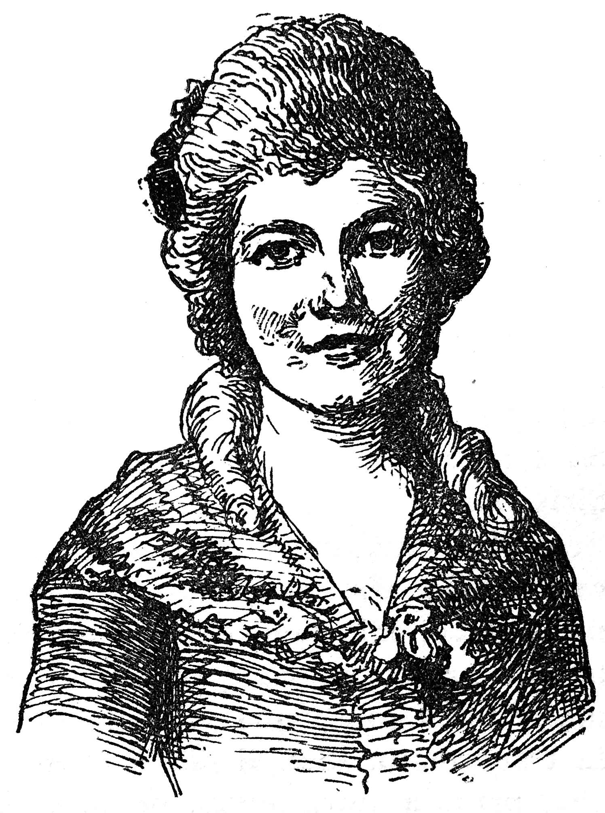

Historio de Kunegond.
«Mi estis en lito kaj dormegis, kiam plaĉis al la Ĉielo sendi Bulgarojn en nian belan kastelon de Thunder-ten-tronckh; ili tranĉis la gorĝon de mia patro kaj de mia frato, kaj dispecigis mian patrinon. Iu granda Bulgaro, ses futojn alta, konstatante, ke ĉe tia spektaklo mi senkonsciiĝis, ekkomencis min seksperforti; tio redonis al mi la konscion, mi kriis, baraktis, mordis, ungovundetis, mi volis elŝiri la okulojn de tiu granda Bulgaro, ne sciante, ke tio, kio okazis en la kastelo de mia patro, estis kutima afero: la perfortulo trabatis mian flankon per tranĉilo kaj faris vundon, kies postsignon mi ankoraŭ portas.»
― Ho ve! tiun postsignon mi esperas Vidi, diris la naiva Kandid.
― Ĝin vi vidos, diris Kunegond; sed ni daŭrigu.
― Vi daŭrigu, diris Kandid. La sekvon de sia historio ŝi rakontis tiele: «Bulgara kapitano eniris, li vidis min tute sanganta, kaj la soldato ne atentis lin. La kapitano ekkoleris pro la nerespektemo al li de la perfortulo kaj mortigis lin kuŝantan sur mia korpo. Poste li min bandaĝigis, kaj kondukis kiel militkaptiton en sian kazernon. Mi lavis lian malgrandan kvanton da ĉemizoj, mi kuiris liajn manĝaĵojn; mi devas konfesi, ke li opiniis min tre bela, kaj mi ne neos, ke li estis belstatura kaj havis blankan kaj glatan haŭton; cetere ne tre sprita li estis kaj ne tre klera: oni tuj povis konstati, ke ne edukis lin doktoro Panglos.
«Post tri monatoj, perdinte sian monon kaj ŝaton al mi, li vendis min al iu judo nomita don Isaĥar, kiu ŝakris en Holando kaj en Portugalio, kaj kiu pasie ŝatis la virinojn. Tiu judo tre forte ligiĝis al mia persono, sed li ne povis ĝin venki; mi pli bone rezistis al li ol al la bulgara soldato: digna persono povas unu fojon esti seksperfortata, sed ĝia virto pro tio plifirmiĝas. La judo, por akiri mian favoron, kondukis min en ĉi tiun kamparan domon. Ĝis nun mi kredis, ke ne ekzistas sur la tero io pli bela ol la kastelo de Thunder-ten-tronckh; mi seniluziiĝis.
«Iun tagon la granda inkvizitoro ekvidis min ĉe diservo; li multe rigardis min oblikve kaj avide, kaj sciigis, ke li bezonis paroli al mi pri sekretaj aferoj. Oni kondukis min en lian palacon; mi sciigis al li mian devenon; li klarigis, ke estas ne inda je mia rango aparteni al izraelido. Je lia nomo oni proponis al don Isaĥar, ke li transcedu min al la sinjorego.
«Don Isaĥar, kiu estas la bankiero de la kortego kaj influhava persono, ne konsentis tian proponon. La inkvizitoro minacis lin je bruligo. Fine la judo timigite faris kontrakton, laŭ kiu la domo kaj mi komune apartenos al ambaŭ; ke la judo estos la ĝuanto lunde, merkrede kaj sabate, kaj la inkvizitoro dum la aliaj tagoj. Jam de ses monatoj daŭras tiu konvencio. Ne sen interdisputoj: ĉar ofte estis malfacile decidi, ĉu la nokto de sabato ĝis dimanĉo apartenas al la malnova leĝo aŭ al la nova. Ĝis nun mi rezistis al ambaŭ; kaj mi kredas, ke pro tio mi ĉiam estis amata.

Kundegond
«Fine, por forigi la malfeliĉegon, kiun kaŭzas tertremoj kaj timigi don Isaĥar, plaĉis al sinjorego la inkvizitoro solene fari bruligon. Li honoris min per invito. Tre bonan lokon mi ricevis; oni alportis al la sinjorinoj refreŝigaĵojn inter la diservo kaj la ekzekuto. Verdire mi sentis abomenon, vidante bruli tiujn du judojn kaj tiun honestan Biskajanon, kiu edziĝis kun sia sambaptopatrino, sed kia estis mia surprizo, mia teruro, mia maltrankvilo, kiam mi vidis en «san-benito» kaj sub mitro, vizaĝon, kiu similis al tiu de Panglos! Mi frotis al mi la okulojn, atente rigardante, mi vidis lin pendigita; mi svenis. Apenaŭ mi estis rekonsciiĝinta, ke mi ekvidis vin senvestigita, tute nuda: tio estis plej alta grado da abomeno, da konsterno, da doloro, da malespero. Mi diros al vi, ke via haŭto vere estas eĉ pli blanka kaj havas karnokoloron pli perfektan ol tiu de mia kapitano de Bulgaroj. Tia vido duobligis ĉiujn sentojn, kiuj min premŝarĝis, kiuj min forkonsumis. Mi ekkriis, mi volis diri: «Haltu, barbaroj!» sed la voĉo mankis al mi, kaj miaj krioj estus senutilaj.
Kiam vi estis forte batata sur la sidvangojn: «Kiel povas okazi, mi diris, ke la aminda Kandid kaj la saĝa Panglos troviĝas en Lisbono, unu por ricevi cent vipobatojn, kaj la alia por esti pendigata laŭ ordono de sinjorego la inkvizitoro, kies amatino mi estas? Panglos tre kruele trompis min, kiam li diris, ke ĉio statas plej bone.»
«Maltrankviligite, konsternigite, jen pro kolero estante duonfreneza, kaj jen preskaŭ morta pro malforteco, mia penso estis tute okupita de la buĉo al mia patro, al mia patrino, al mia frato, pri la malrespektego de mia malbela bulgara soldato, pri la tranĉilbato, kiun li donis al mi, pri mia servuteco, pri mia kuira metio, pri mia bulgara kapitano, pri mia malbela don Isaĥar, pri mia abomena inkvizitoro, pri la pendigo al doktoro Panglos, pri tiu granda miserere kun ludo de unutona muziko, dum kiu oni batis vin sur la sidvangojn, kaj ĉefe pri la kiso, kiun al vi mi donis malantaŭ ekranego, la tagon, kiam mi vidis vin por la lasta fojo. Mi laŭdis al Dio, kiu revenigis vin al mi, post tiom da afliktoj. Mi rekomendis al la maljunulino, ke ŝi zorgu pri vi, kaj konduku vin ĉi tien, tuj kiam ŝi povos. Ŝi tre bone plenumis mian komision; mi ĝuis la neesprimeblan plezuron revidi vin, aŭdi vin, paroli al vi. Vi kredeble malsategas; grandan apetiton mi havas; ni komencu per vespermanĝo.»
Jen ili ambaŭ altabliĝas; kaj, post la vespermanĝo, ili reokupas la belan kanapon, pri kiu ni jam parolis; ili estis tie, kiam sinjoro don Isaĥar, unu el la mastroj de la domo, alvenis. Estis sabate. Li venis por ĝui siajn rajtojn, kaj klarigi sian delikatan amon.